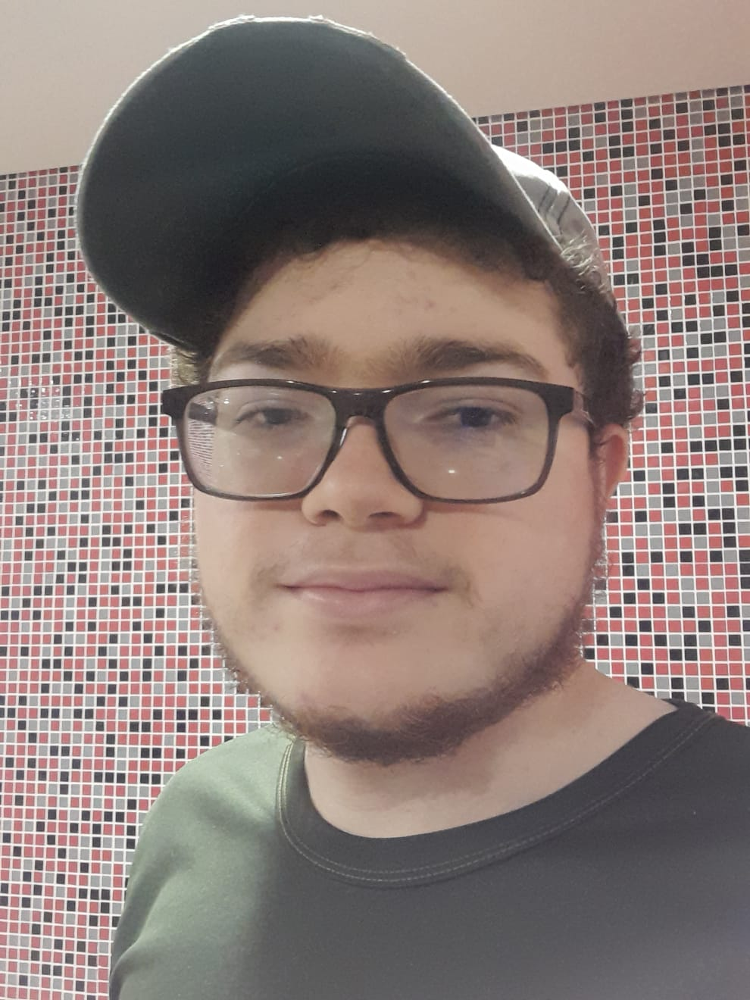

Acerca de mí
¡Hola! Soy José, un Diseñador Hipermedia con una profunda pasión por contar historias y dar vida a ideas a través de medios digitales. Me especializo en animación 2D, diseño de cómics y el desarrollo de interfaces web atractivas.
Disfruto transformar conceptos en experiencias interactivas que conecten con el público. Considero que el diseño no solo es estética, sino también comunicación y funcionalidad.
Además de mis habilidades técnicas, soy curioso, proactivo y me encanta aprender constantemente. Me interesa explorar nuevas tecnologías, adaptarme a diferentes estilos visuales y trabajar en equipo para lograr resultados que realmente impacten.